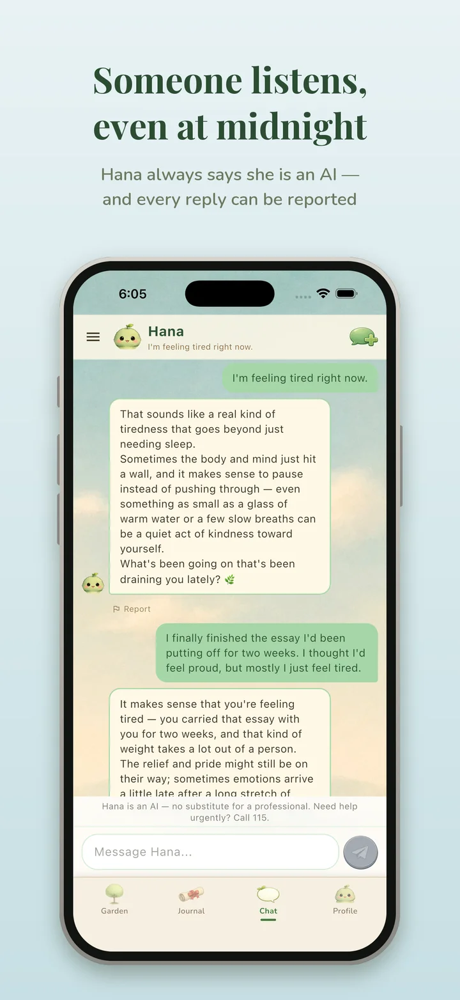
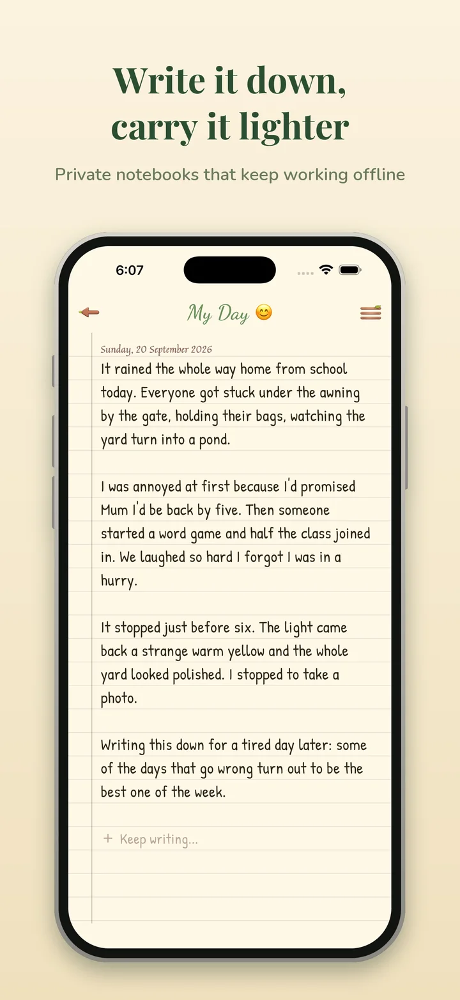
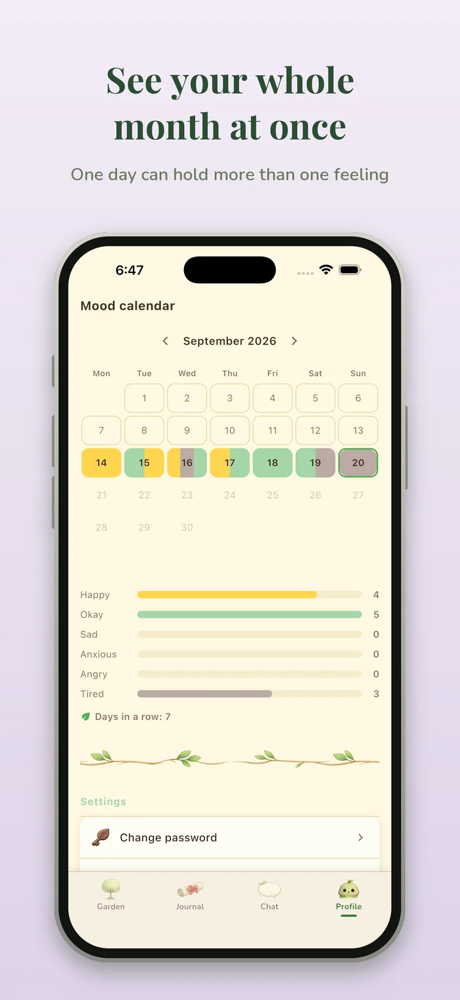
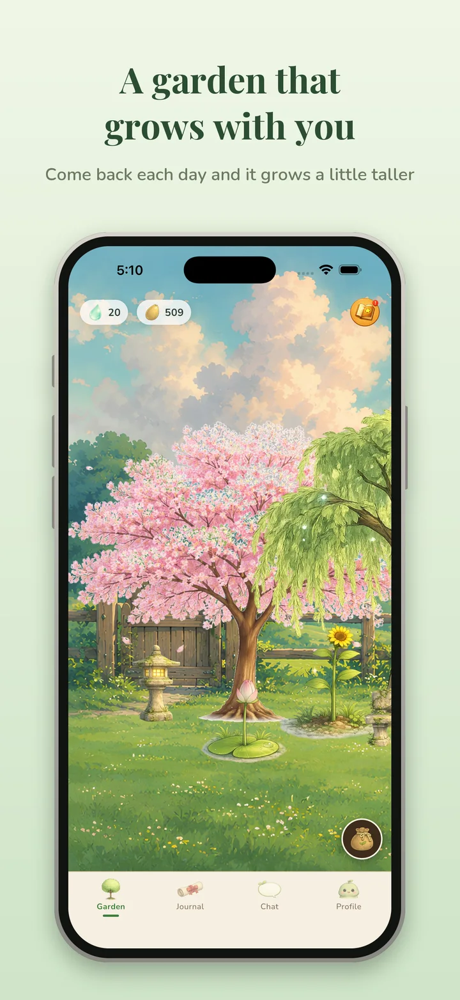

Someone listens, even at midnight
Chat with Hana, an AI companion that always says it is an AI. Every reply can be reported.
Mental health AI chatbot app paired with peaceful journal and relaxing garden.
Pham Ha Khanh Chi




Outside the classroom, I built Soul Garden, a chatbot supporting the well-being of Vietnamese teenagers. I made this because as a teenager myself, I understand how rare space is to express what we really feel.
The chatbot pairs LLM-generated conversation with a rule-based selector I wrote to suggest activities from emotional expressions in Vietnamese, where slang and metaphor defeat off-the-shelf sentiment tools.
In practice, the selector did read each message accurately but failed across a conversation: it suggested a breathing exercise to someone who had just said they felt better. It lacked the context the language model had, so I redesigned the pipeline to track mood across messages and coordinate suggestions with response generation.
That fix shaped how I think about problems. I became fascinated by the relationship between decomposition and integration: splitting a problem into parts small enough to solve while preserving the dependencies between them. Soul Garden taught me to test my assumptions and rebuild when they were wrong.
I hope Soul Garden becomes a low-barrier first step for teenagers who can’t see a therapist. An app that makes talking about feelings feel comfortable, pointing teenagers towards real human support, such as helplines when they need more than an app could give. Reaching that point means treating safety and cultural nuance as engineering problems in their own right, and that is the kind of technology I want to learn to build very well.
Chat with Hana, an AI companion that always says it is an AI. Every reply can be reported.
Private notebooks that keep working offline.
A mood calendar where one day can hold more than one feeling.
Come back each day and it grows a little taller.